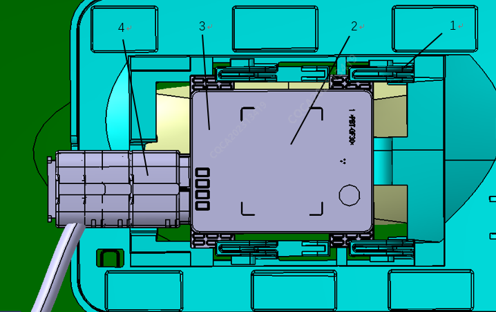
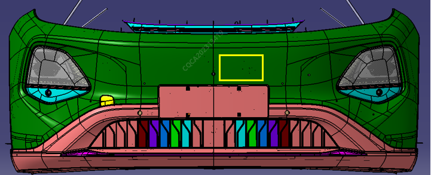

Радар миллиметрового диапазона переднего обзора в сборе установлен на кронштейне с внутренней стороны переднего бампера в сборе (схема установки приведена на рисунке ниже). Данный кронштейн приварен внутри переднего бампера автомобиля. При необходимости замены аппаратной части радара миллиметрового диапазона переднего обзора в сборе необходимо сначала снять передний бампер Снятие и установка переднего бампера; после чего можно производить замену.

|
№ |
Компонент |
№ |
Компонент |
|
1 |
Монтажный кронштейн радара миллиметрового диапазона переднего обзора |
2 |
Расположение таблички радара миллиметрового диапазона переднего обзора |
|
3 |
Радар миллиметрового диапазона переднего обзора в сборе |
4 |
Разъем радара миллиметрового диапазона переднего обзора |
К зоне установки и размещения переднего радара на переднем бампере в сборе предъявляются специальные требования. Ниже приведено подробное описание; строго соблюдайте данные требования во избежание сбоев в работе радара
На совершенно новой модели Q05 радарный датчик установлен за телом переднего бампера в сборе
При выполнении ремонта тела бампера во избежание создания помех для радарного датчика соблюдайте следующие требования:
1. На внешнюю поверхность бампера в зоне действия радара (рис. 1) запрещается наклеивать бронепленку, виниловые пленки, наклейки и другие перекрывающие материалы
2. Установка рамки номерного знака не должна затрагивать зону действия радара (рис. 1) (по проектному положению номерной знак расположен вплотную к зоне радара; установка дополнительных рамок номерного знака теоретически запрещена, так как попадание номерного знака или его рамки в зону на рис. 1 препятствует прохождению радиоволн радара и приводит к отказу его функций)
3. Категорически запрещается выполнять любые ремонтные работы в зоне действия радара (в пределах желтой рамки на рис. 1). К ремонтным работам относятся: добавление пластиковых присадок/шпаклевки, пластическая сварка, установка скоб, а также шлифование кромок лакокрасочного покрытия;
4. Максимальная толщина слоя лакокрасочного покрытия в зоне размещения радара на декоративной накладке тела переднего бампера (рис. 1) должна соответствовать требованиям таблицы ниже
| № | Наименование цвета | Толщина нанесения грунтовки | Толщина нанесения базовой эмали | Толщина нанесения лака | Общая толщина заводской покраски детали | Максимально допустимая толщина при ремонтной покраске |
| 1 | Звездный белый | < 12 мкм | < 10 мкм | < 45 мкм | < 92 мкм | <= 104 мкм |
| 2 | Сочный зеленый | < 12 мкм | < 12 мкм | < 45 мкм | < 92 мкм | <= 104 мкм |
| 3 | Лунный серебристо-серый | < 12 мкм | < 20 мкм | < 45 мкм | < 92 мкм | <= 104 мкм |
| 4 | Закатно-пурпурный | < 15 мкм | < 20 мкм | < 45 мкм | < 92 мкм | <= 104 мкм |
| 5 | Межзвездный серый | < 12 мкм | < 17 мкм | < 45 мкм | < 92 мкм | <= 104 мкм |
1) 25 мкм равны 1 милу
2) Толщину лакокрасочного покрытия можно определить одним из следующих способов
1)) Использовать специальный инструмент для измерения на пластике, например ультразвуковой толщиномер PosiTector200 или PhaseIIUTG-2900 (выбирается исходя из фактических условий на месте, точность измерения должна составлять не менее 1 um);
2)) Зашлифовать деталь, обнажив внутренний пластик, определить количество слоев лакокрасочного покрытия и проверить, нанесены ли на декоративную накладку тела переднего бампера два слоя покрытия. Если какой-либо участок накладки переднего бампера требует 3-кратной подкраски, то перед нанесением краски необходимо полностью удалить все лакокрасочное покрытие с внутреннего пластика в зоне действия радара (рис. 1) либо заменить тело переднего бампера. К ремонту поверхности переднего бампера за пределами зоны, обведенной желтой рамкой на рис. 1, специальные требования не предъявляются;
3) Если при повторной покраске накладки бампера толщина пленки в зоне действия радара превышает требования вышеприведенной таблицы, сначала полностью удалите все ЛКП в зоне действия радара (в пределах желтой рамки на рис. 1), после чего выполните повторную покраску. Если выполнить ремонт в соответствии с требованиями невозможно, замените передний бампер в сборе
При выполнении ремонтных работ не допускайте снятия пластикового материала под слоем краски тела бампера в зоне действия радара. Калибровка датчика радара выполняется на основе заводской толщины тела бампера; удаление лишнего пластика в данной зоне может привести к сбою в работе радара
При установке нового бампера в сборе используйте неокрашенное тело бампера в сборе от производителя

Рис. 1